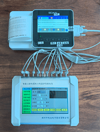

河南省计量协会举办JJG 543-2026心电图机检定规程宣贯
郑州市先达电子技术有限公司提供ECG-6心脑电图机检定仪供实际操作
我省医学计量专家对JJG543-2026规程核心变化、计量性能要求、检定项目、数据处理等内容进行了系统讲解，重点对比新旧规程差异，明确关键技术指标与操作要点，确保培训人员准确理解、精准执行新规程。
培训人员在专业技术人员的指导下，采用ECG-6智能心脑电图机心电监护仪检定仪分组对心电图机进行全流程实操训练，重点练习标准器与心电图机的连接、参数设置、波形测量、误差计算等关键步骤。
ECG-6智能心脑电图机心电监护仪检定仪（手持式）新的特点：
（1）手持式7英寸大屏幕触摸操作、界面友好，锂电池供电，方便现场检定。
（2）输出信号电极端子自然可视，与心电图机电极连接和多参数监护仪电极连接更加方便。
（3）增加了误差计算和参数计算的数据处理功能，提升了用户现场处理数据能力，节约了用户后续数据处理的时间。
（4）增加了信号源的测试波形种类（多达十几种），满足了用户对测试信号多样化的需求。
（5）用户可自行配置输出电路，如极化电压、模拟皮肤阻抗、输入阻抗的加入与去掉，以适合新的测试项目。
（6）具有自动测量功能。
